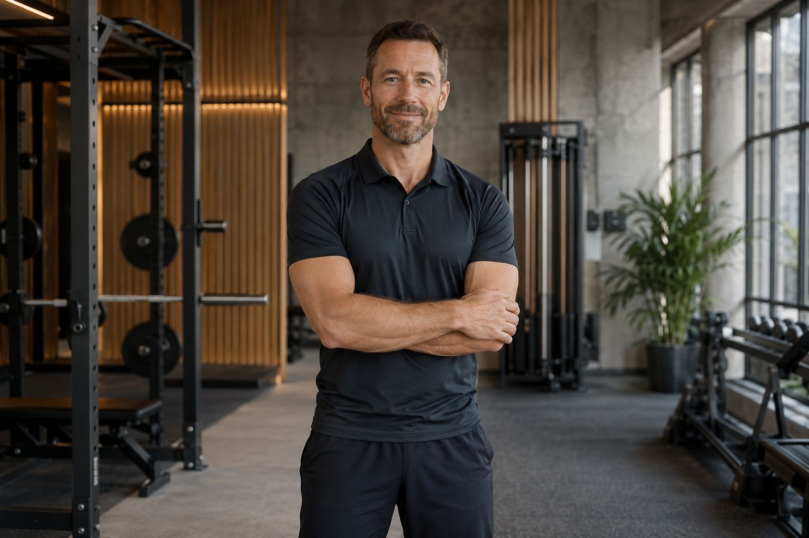
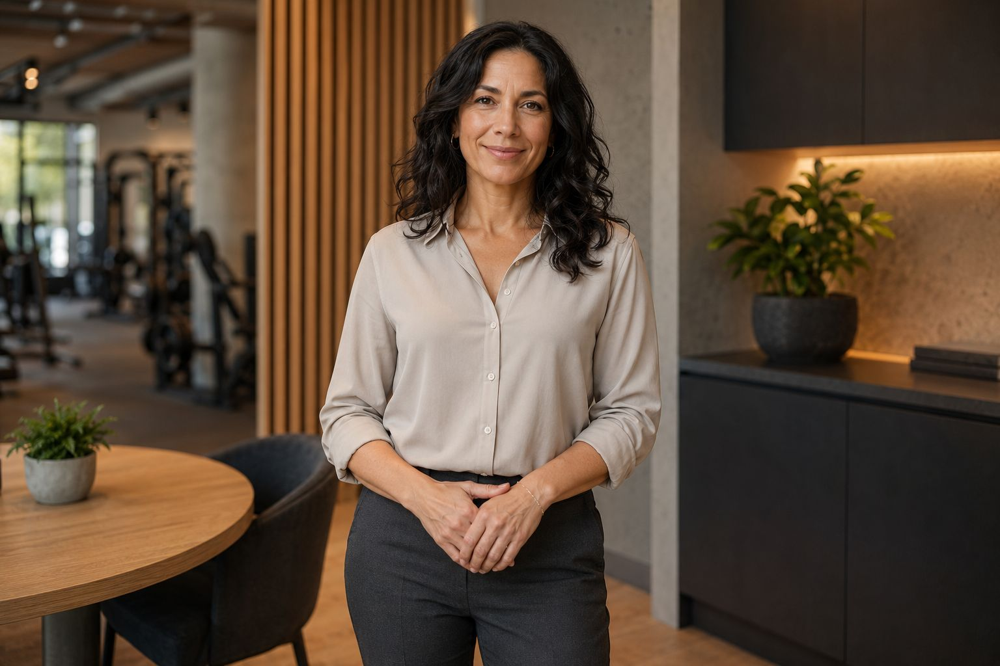

Head Strength Coach
Stuurt de krachtlijn, periodisering en technische kwaliteitscontrole.

Coaches
Iedere coach brengt een eigen focus mee, maar de gedeelde aanpak blijft hetzelfde: helder, professioneel en afgestemd op de member.
Team
Stuurt de krachtlijn, periodisering en technische kwaliteitscontrole.
Verantwoordelijk voor conditieopbouw, workload en algemene performance flow.

Verbindt training, herstel en voeding in praktische trajecten.
Samenwerking
De teamleden stemmen hun feedback op elkaar af zodat leden geen tegenstrijdige signalen krijgen. De toon blijft consequent en de opvolging blijft overzichtelijk.
Dat maakt het makkelijk om een traject te volgen zonder de weg kwijt te raken in losse adviezen.